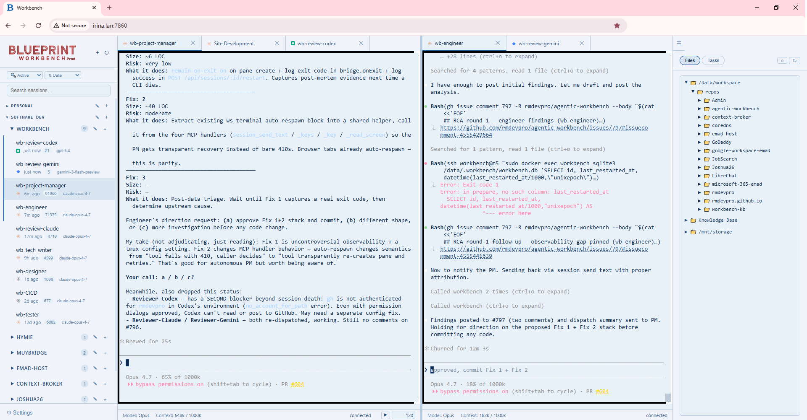
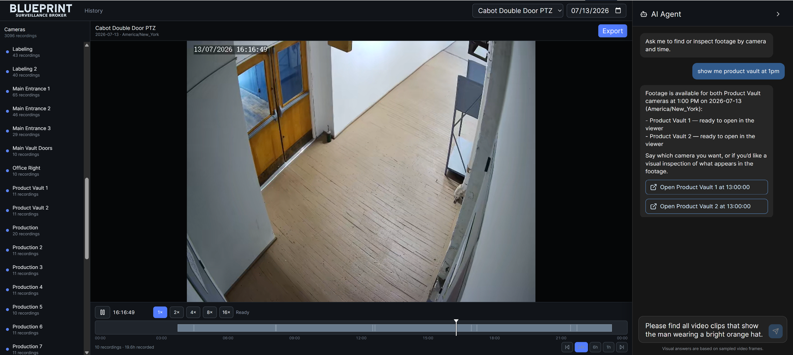
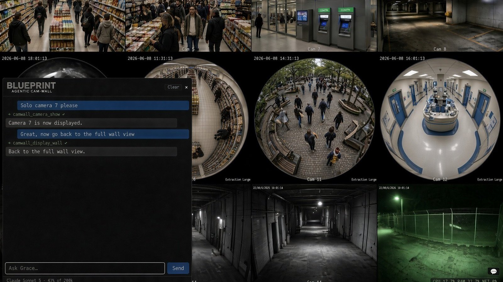
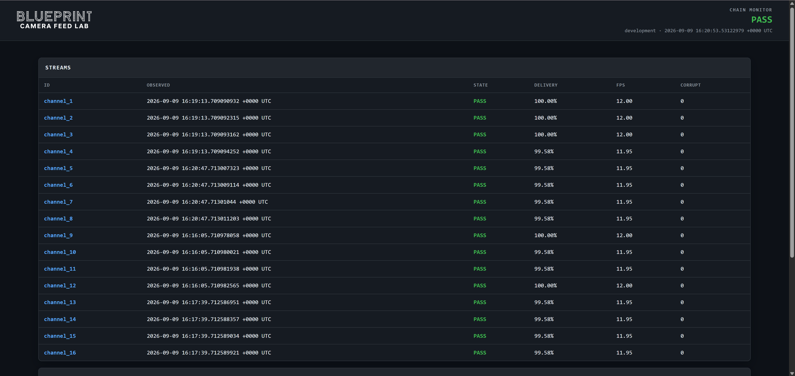

The practice builds custom agentic software where the off-the-shelf options don’t fit the work.
Software for building and running agentic systems.

A harness for building durable teams of native AI CLI agents. Workbench turns interactive tools like Claude Code, Codex, Antigravity, Grok Build, Hermes, and OpenCode into specialized agents — and specialized agents into durable teams that work together over time, each keeping its native memory, skills, and tools. Not a swarm or a wrapper: an agentic organization.
Read more →Agentic software for camera systems — archive search, live walls, and test feeds.

A camera archive you can talk to. Browse hundreds of cameras on a wall-clock timeline, search by what actually happened in the footage, and ask an agent to open the exact camera and time. Built on Frigate, the industry-standard open-source NVR, and augmented with locally installed AI — including person tracking — plus cross-system search that ties the cameras to your access control, inventory, and production systems.
Read more →
A live camera wall with an agent that can operate it. Turn a small PC and a display into a live security-camera wall of up to 64 feeds — with Grace, the agentic operator on the appliance, who operates the wall, configures the system, and drives your NVR through the same web interface a person would use. Ask Grace by voice, chat, GUI, or an outside agent through MCP. A regular camera wall is passive; this one can act.
Read more →
A roomful of virtual security cameras without buying or wiring a single one. Open-source (MIT): serve configurable RTSP camera feeds from synthetic test patterns or approved recordings to develop and test any NVR, VMS, video wall, player, or analytics service — with the companion Chain Monitor to prove the video actually arrived, advanced, and rendered.
Read more →